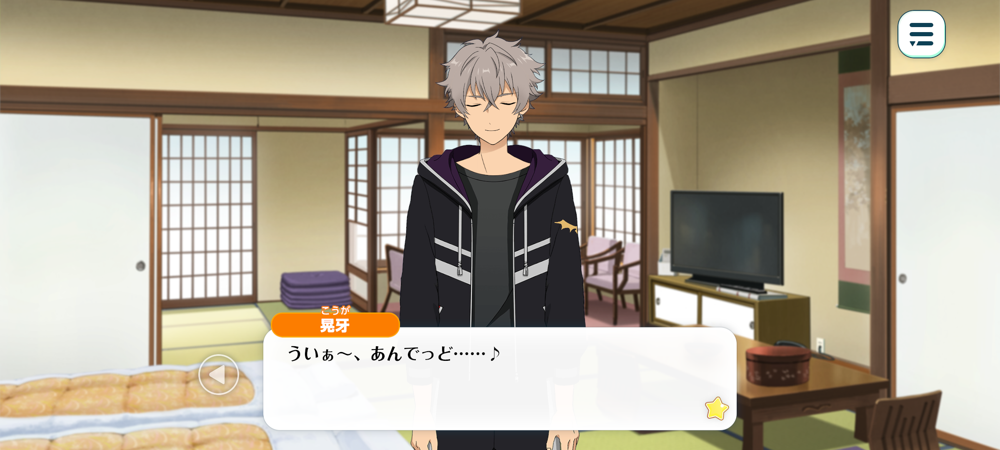
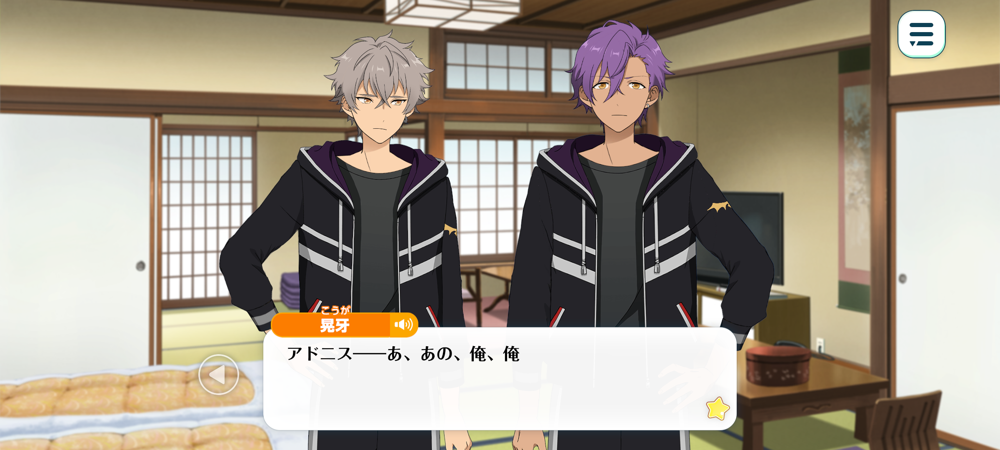
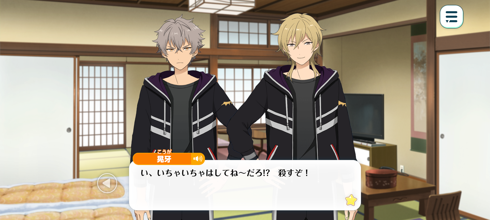

PSYCHOBREAK — Epilogue 1



Koga: Zzzz…zzz… shake you…ignorant… fools–
We are~, undead…♪
…
…!? H-huh? Was I asleep?
(What…? No way. Was all of that just a dream!?)
(But... how much of it was a dream? Wait, what day is it? What time is it?)
(Where the hell am I!? Don't tell me everything that's happened up till now was a dream, and we're still stuck in that dodgy experiment...?)
(Was I just knocked out with sleeping pills, and I just dreamt the whole thing?)
(We found that bastard who was behind everything and put a stop to his plans... Then we had the best live ever with our senpais and Adonis... Was all of that a dream!?)
(No way. That can't be right, can it? We really did sort everything out, didn't we...?)
(We smashed those stupid fakes and the bastard behind them, and stayed the strongest, greatest UNDEAD—)
(No! We became even greater than before! We became the coolest, most awesome version of ourselves...!)

Adonis: W’at ‘re yo ta (brushing his teeth).
What are you fussing about, Oogami?
You're absolutely drenched in sweat... Did you have a bad dream?
Koga: Adonis— Um, uh, I um.
Adonis: ? What’s wrong?
This isn't like you, Oogami. You're supposed to be brave, proud. and incredibly cool, no matter what happens.
That worried expression does not suit you.
Koga: Adonis… Uh, what’s the date today?
Adonis: Are you having trouble remembering? Things have been rather hectic lately. Yesterday's performance was quite demanding, so you must be exhausted.
Perhaps you've been sleeping for so long that you've lost track of time and reality.
Those strange experiments have affected my own sense of reality, too. I imagine it'll take us some time to feel completely normal again.
Koga: Th-the performance yesterday...? You mean the one where our real senpais came rushin’ over, and the four of us, the real us, not those robots, performed together, right?
And that's when we finally figured out the truth behind this whole incident, who the culprit was, and—
Adonis: Yes... But we're still on tour, so we haven't returned to ES. We're staying at a ryokan instead. You remember that, don't you?
Koga: Y-yeah, I guess so. All the ryokan run by ES-affiliated companies have pretty much the same interiors, so I got confused... But this isn't the AIIE experiment facility, right?
Adonis: Mhm... This whole experience has taken a toll on both our bodies and minds. Perhaps it's left you a little traumatised. It's all right, Oogami. This isn't the experiment facility.
There's nothing here that can hurt you. And if anything ominous should appear, I'll protect you.
As a member of UNDEAD, I'll protect my friends, even if it costs me my life.
Koga: Yeah... Just don't go dying on me, all right? I get what you're saying, though.
Haha. My bad, Adonis, I’m bein’ pathetic.
Adonis: You don't need to apologise. If anything, I'm glad you felt comfortable enough to show me that side of yourself.
It means you trust me. I'm truly honoured.

Kaoru: And what exactly are you two doing, flirting this early in the morning?
Koga: W-we weren’t flirtin’!? I’ll kill you!
Kaoru: Hey, no need to bite my head off~. Rei-kun and I have taken those sleeping pills more times than you two have, you know.
I'm still feeling the effects, and I've got a splitting headache. All that shouting isn't helping, so you're being a real nuisance.
Adonis: Fufu. It seems the effects of this whole ordeal will stay with us for some time. In more ways than one.
Kaoru: Yeah. We've already had to cover up one lie after another, and now we've got to keep up our activities as HELLSING, too.
The fake versions of us have already been shut down...
So from now on, the four of us will have to juggle both UNDEAD and HELLSING's activities, even though they're practically polar opposites.